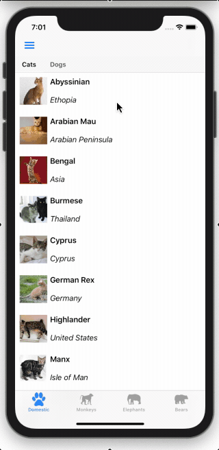
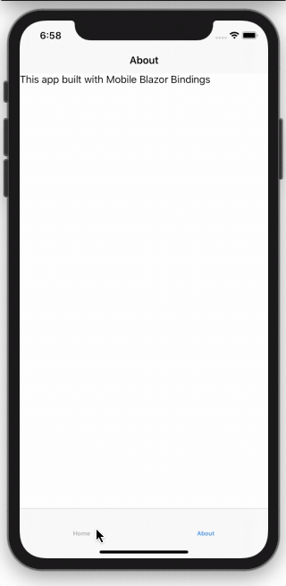
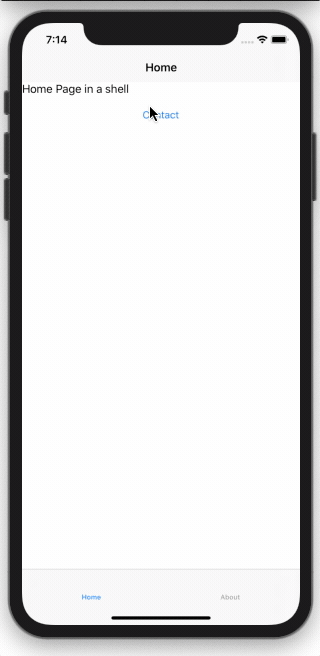
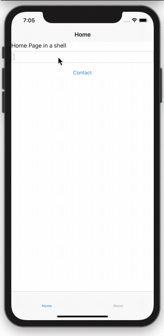

Shell Navigation Manager
Important
This project is an experimental release. We hope you try out Experimental Maui Blazor Bindings and provide feedback at https://github.com/Dreamescaper/BlazorBindings.Maui.
There are several different approaches to navigation in Maui Blazor Bindings. They are based on MAUI navigation patterns such as Master/Detail, TabbedPage, Navigation Page, and Shell.
Shell Navigation Manager is designed to feel familiar to Blazor developers. The routes are added using the @page directive with the same format, including parameters, and the navigation manager is accessed via dependency injection.
Internally it is implemented using MAUI Shell URI Navigation. Shell has support for top tabs, bottom tabs, hamburger/flyout, stack, modal and URI-based navigation. These can all be mixed together or used in isolation, depending on what your app needs.

For more details on Shell, check out the Xamarin Forms documentation. Details of routing in Blazor are in the ASP.NET Core documentation
For a sample of ShellNavigationManager see the Xaminals sample in the Maui Blazor Bindings repo.
Setup
To use the ShellNavigationManager you'll need to have a Shell as the MainPage in your app.
To start off here is a simple Shell that has two tabs: one for a HomePage, and one for an AboutPage. This should be in a file called AppShell.razor.
<Shell FlyoutBehavior="FlyoutBehavior.Disabled">
<TabBar>
<Tab>
<ShellContent>
<HomePage />
</ShellContent>
<ShellContent>
<AboutPage />
</ShellContent>
</Tab>
</TabBar>
</Shell>

Important
The HomePage and AboutPage must have ContentPage as their root element to be used in Shell.
Inside App.cs, the AppShell needs to be set as the MainPage of the app. This is done by calling AddComponent. Setting the Shell as the MainPage is done in the background so we also have to set a blank ContentPage as a placeholder while it is loading.
To enable ShellNavigationManager and make it available for our pages we add it as a singleton service.
This should give you an App constructor that looks like this:
public App()
{
AppHost = MobileBlazorBindingsHost.CreateDefaultBuilder()
.ConfigureServices((hostContext, services) =>
{
// Register app-specific services
//services.AddSingleton<AppState>();
services.AddSingleton<ShellNavigationManager>();
})
.Build();
MainPage = new ContentPage();
AppHost.AddComponent<AppShell>(parent: this);
}
Registering Routes
Route registration occurs in each Razor component that you want to be able to navigate to. Routes are defined using the @page directive followed by a string URI. This URI must start with a slash.
For example, here's a contact page with the route /contact.
@page "/contact"
<ContentPage>
<StackLayout>
<Label Text="Phone Number:"></Label>
<Label Text="123456"></Label>
</StackLayout>
</ContentPage>
Multiple routes can be placed on a page if required.
Note
As of the 0.6 Preview The target of a Shell navigation must derive from the Page type. Prior to the 0.6 Preview release the target had to derive from ContentView.
Navigating to a page
Navigation between pages is achieved using the Shell Navigation Manager, which you can access in your components using the @inject directive. Once you have an instance you call NavigateToAsync() with the URI of the page you want to open.
The following example shows a page with a Button that when pressed will navigate to the ContactPage.
@inject ShellNavigationManager NavigationManager
<ContentPage>
<StackLayout>
<Button Text="Contact"
OnClick="OpenContactPage">
</Button>
</StackLayout>
</ContentPage>
@code
{
async Task OpenContactPage()
{
await NavigationManager.NavigateToAsync("/contact");
}
}

Navigation parameters
When navigating to a page you will often want to pass data to the destination page. In Blazor you can pass data as parameters in the URI.
To set up a page to accept a navigation parameter you will need to add a property to the page and mark it with the [Parameter] attribute.
e.g.
[Parameter] public string Name { get; set; }
Then you need to add a route for the page with the parameter name, surrounded with {} at the end of the / separated URI.
For example:
@page "/contact/{Name}"
To navigate to this page with a parameter, substitute the name you want to pass into the URI and use the same NavigateToAsync function. For example:
await NavigationManager.NavigateToAsync("contact/Dunston");
When the ContactPage is navigated to, you can read the value of the Name by accessing the Name property in the page.

Navigation parameters can be any of several .NET types that can be easily converted into strings, such as int, string, Guid, and DateTime. Full details of supported types are available in the Blazor Routing documentation